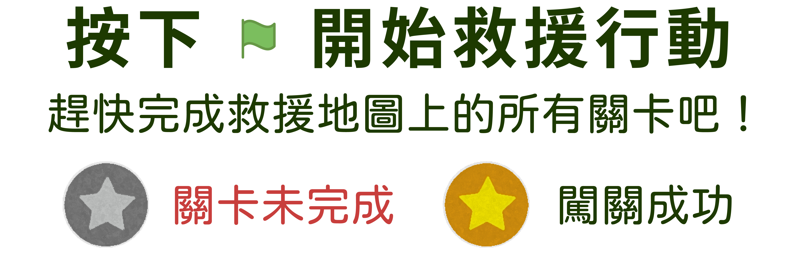

台灣是生態系多樣的島嶼，有15萬種以上的物種。但人類的高度發展導致環境污染，威脅野生動物的健康和生命。每年救援醫療動物案例超過600件，大多是因人為因素導致的。讓我們開始野生動物救援小挑戰，並學習救援相關知識吧！

台灣是生態系多樣的島嶼，有15萬種以上的物種。但人類的高度發展導致環境污染，威脅野生動物的健康和生命。每年救援醫療動物案例超過600件，大多是因人為因素導致的。讓我們開始野生動物救援小挑戰，並學習救援相關知識吧！
也許您從沒想過您會有機會幫助身陷痛苦的野生動物，例如發現撞擊玻璃、車禍、掛鳥網、中獸鋏的野生動物，或是落巢失怙的幼鳥、幼獸…等。
您要向這些受傷生病的野生動物伸出援手時，一定要知道這些動物是將您當作敵人看待，因此可能會攻擊您。知道如何減輕傷病野生動物的恐懼和疼痛方法，將有助於動物的救治處理。在此我們要告訴您，當您正準備對受傷、生病的野生動物伸出援手前，請先留意：眼前的野生動物是不是真的需要幫助？以及，該如何幫助傷病野生動物，才是正確的。以下將介紹如何應對受傷野生動物以及後送單位。
在出手之前，我們需要先觀察動物是否真的需要介入救援。花點時間在遠處觀察，若是練飛的幼鳥或短暫跟親獸分開的幼崽，父母親可能就在附近，並非真的失親，便無需救援後送。如果動物狀況不對，才以人畜雙方安全為前提下進行救援。有時難以辨識是否需要協助救援，此時可以先聯繫救援單位，確認動物狀況後再執行後續救援步驟。
動物救援必然重要，保護自己不在過程中受傷或染疫，才是救援工作的長久之計。如經觀察後確認動物需要救援，救援者須準備適當大小的紙箱，使用手套、毛巾或身邊的衣物進行捕捉，切勿徒手捕捉以免受傷。若為中大型較具危險性的哺乳類動物，可以撥打市民專線1999，請地方政府農畜處或保育科協助救援。
成功捕捉後，將動物安置於事先準備好的容器中，外層可蓋上毛巾，讓動物處在黑暗的環境之下，避免直接看到外界動靜，可有效地使受傷動物的情緒趨於穩定，尤其在禽鳥類、山羌或穿山甲，更是至關重要的救援環節。
救援過程中避免餵食、餵水。運送過程盡量小心，避免使動物碰撞，導致二度傷害。抵達救援單位時，請告知工作人員救援現場狀況，發現地點與周遭環境，協助釐清病情，才能讓動物接受正確與有效的治療。
北部地區：木柵動物園 (02)2938-2300
中部地區：中興大學獸醫院：(04)2284-0405,2287-0180
特有生物研究保育中心 ：(049)276-1331 #555
南部地區：屏東科技大學獸醫院：(08)774-0270，(08)7703202 #5083
協助東部傷病野生動物救援，可立即聯繫的單位如下：
A. 當地縣市政府：1999
B. 林務局專線：0800-000930
C. 野灣野生動物醫院：089-862368
made by Chelsea.Lai.2023